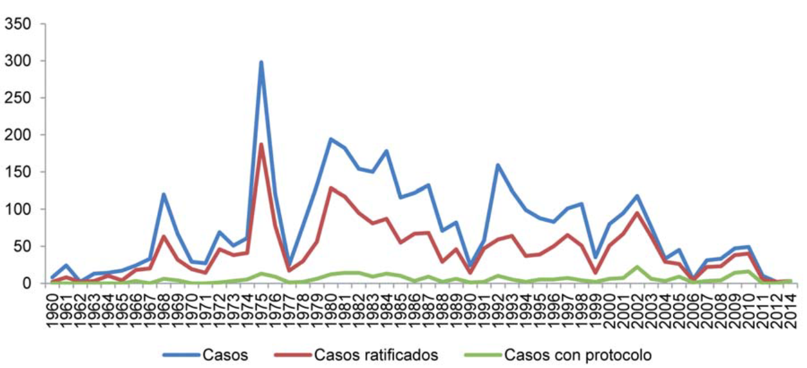

The Basque Government confirms that there were 4,113 cases of torture between 1960 and 2014
The Civil Guard is involved in 1,792 cases of torture; the National Police is responsible for 1,785 cases; and the Ertzaintza of 336. Paco Etxeberria assures that the real numbers are much higher.
EITB - ORAIN, December 18, 2017
Un informe sobre la incidencia de la tortura y los malos tratos entre 1960 y 2014 encargado por el Gobierno Vasco cifra en 4.113 los casos documentados, aunque advierte de que la incidencia real de estos delitos fue mayor, ya que no se han podido acreditar muchos episodios de la época de la dictadura.
El informe ha sido presentado hoy en Donostia-San Sebastián por el experto forense y profesor de la Universidad del País Vasco (UPV/EHU) Francisco Etxeberria, la investigadora del Instituto Vasco de Criminología Laura Pego y el secretario de Paz y Convivencia del Gobierno Vasco, Jonan Fernández.
Según los datos aportados en ese informe, de los 4.113 casos, más de un 83 % fueron denuncias de hombres y un 17 % mujeres y en gran parte todos jóvenes.
Algunos sufrieron malos tratos en más de una ocasión, por lo que la cifra total de personas torturadas es de 3.415.
La Guardia Civil está implicada en 1.792 casos de tortura; la Policía Nacional es responsable de 1.785 casos; y la Ertzaintza de 336.
El 43 % de las personas que sufrieron torturas y malos tratos fueron dejadas en libertad y de ellas el 35 % sin cargos.
Entre los métodos de tortura señalados en el informe, destaca la frecuencia en la utilización de la bolsa por parte de la Guardia Civil, el uso de electricidad o practica de la bañera por parte de ellos también y la Policía Nacional.
En el caso de posturas forzadas u otras formas de producir extenuación física y cansancio aparece también la Ertzaintza.

Caption: Informe sobre la incidencia de la tortura y los malos tratos entre 1960 y 2014
Incomunicación y negación de la tortura
Paco Etxeberria ha aclarado, no obstante, que aún quedan pendientes de análisis 454 expedientes y que, además, sólo 1.081 denuncias corresponden al periodo de la dictadura y los primeros años de la transición hasta 1978, mientras que la "práctica generalizada de la tortura en esa época señala que su dimensión fue mucho mayor".
El número de denuncias alcanzó picos importantes en los años 80 y comenzó a disminuir a partir de 2004, mientras que de 2014 en adelante no se ha registrado ningún caso.
Existen 20 condenas ratificadas por el Tribunal Supremo de torturas y malos tratos a 31 víctimas, de las que derivan 49 condenados, 21 de ellos del Cuerpo Nacional de Policía y 28 de la Guardia Civil, mientras que "no hay ninguna condena contra la Ertzaintza".
Entre las conclusiones recogidas, el informe coincide con las apuntadas por organismos internacionales como el Comité Europeo para la Prevención de la Tortura, que ha citado en varias ocasiones el régimen de incomunicación aplicado a los detenidos por terrorismo como un factor que "ha favorecido la práctica de estos malos tratos y torturas y ha limitado de forma notoria la posibilidad de investigación de los mismos".
También cita las 7 condenas a España del Tribunal Europeo de Derechos Humanos (TEDH) por no haber investigado diligentemente las denuncias de torturas.
El estudio señala asimismo la negación "sistemática" de la práctica de la tortura por parte de la autoridades y recuerda que el Comité contra la Tortura condenó a España por indultar a agentes condenados (el 60 % de los sentenciados por el Tribunal Supremo), ya que estas medidas de gracia "son incompatibles con el deber de prevención y son contrarias al sentido de la reparación".
El informe también constata que la práctica totalidad no ha contado con medidas de atención, reconocimiento ni reparación.
El estudio
Para elaborar estas conclusiones, el equipo liderado por Etxeberria ha analizado y archivado más de 26.113 documentos y ha recabado 500 testimonios directos de víctimas de tortura y malos tratos, a los que se suman otros recopilados con anterioridad en audio y en vídeo hasta alcanzar las 1.027 declaraciones de afectados.
El equipo investigador ha aplicado a 202 casos la metodología de comprobación y análisis de las consecuencias y secuelas establecidos en el Protocolo de Estambul, un trabajo que ha determinado que al menos el 5 % de los denunciantes padecen "secuelas psicológicas importantes que requieren atención especializada".